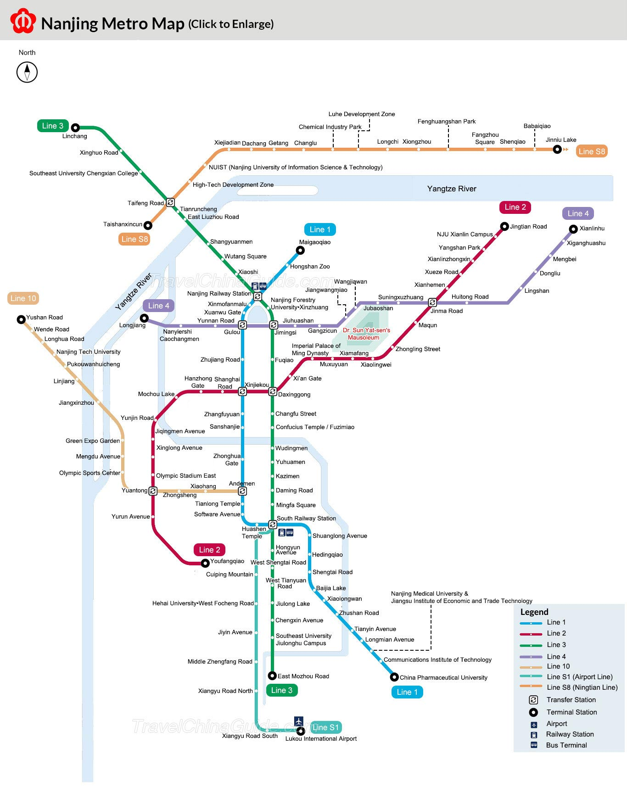

Provided by google map
Nanjing, referred to as “Ning” for short, is also known as Jinling. It is the capital city, sub-provincial city and megalopolis of the People's Republic of China, and the regional center city and the second largest city in East China. Located in the lower reaches of the Yangtze River, located in southwestern Jiangsu. It is an important industrial city in the lower Yangtze River and the Yangtze River Delta, a sub-center city in the Yangtze River Delta, and a political, economic, scientific, educational, cultural, and information center in Jiangsu Province. It is also one of the comprehensive transportation and communications hub cities and science and education centers in China.
The main transportation way in Nanjing is metro, here is the Nanjing Metro Map.